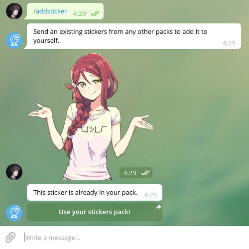
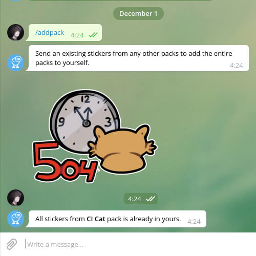
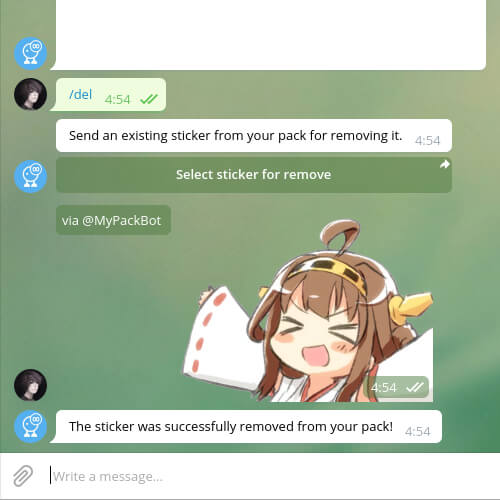
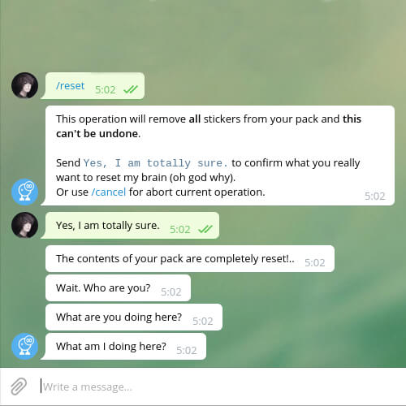
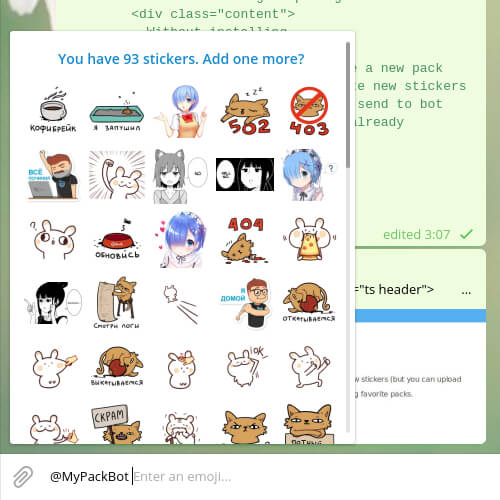
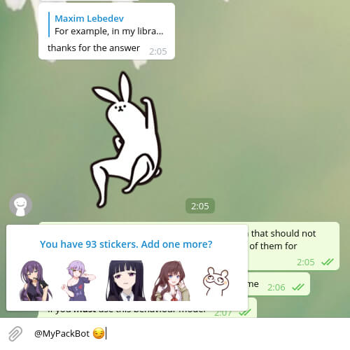

My Stickers Pack
Your own unlimited pack of Telegram-stickers
Open @MyPackBot

Adding stickers
Add stickers from any packs (or upload your own WebP's) one-by-one and they will be in your pack immediately!

Adding packs
Add whole packs by sending just one sticker of them!

Deleting stickers
Remove unnecessary stickers from your pack in a couple of clicks!

Resetting your pack
If you are too carried away, then start from scratch!

Inline search
Get access to all of your stickers in any chats!

Search by emoji
Look for the necessary stickers via Emojis!